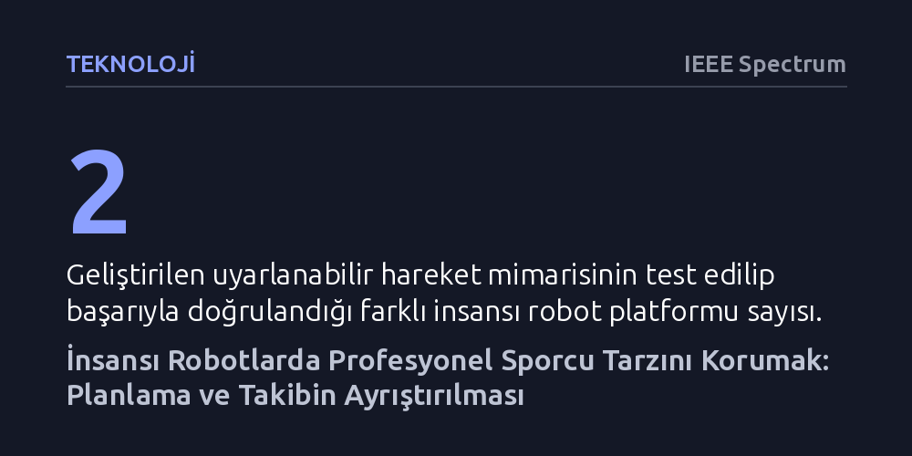

TEKNOLOJI · IEEE Spectrum · 2026-10-13
İnsansı robotların stilini kaybetmeden tenis oynamasını sağlamak amacıyla, üst düzey hareket planlama ile alt düzey fiziksel takip birbirinden ayrıştırıldı. Hıza duyarlı bu uyarlanabilir mimari, harici hareket yakalama sistemi olmaksızın tam boyutlu bir insansı robot üzerinde başarıyla doğrulandı.
İnsansı robotların yalnızca mekanik görevleri değil, insan ustalığı ve zarafeti gerektiren yüksek tempolu spor hareketlerini de gerçek dünyada başarıyla sergileyebileceğini gösteriyor.

İnsansı robotların dinamik top sporlarında yetkinlik kazanması uzun süredir hedeflense de, profesyonel bir sporcunun estetik tarzını korurken aynı anda güvenilir bir performans sergilemek robotik dünyasında çözülmesi zor bir ikilem olarak kalmıştır. Robotik sistemler genellikle ya topa vurabilmek adına mekanik ve kaba hareketlere yönelmekte ya da insan hareketini taklit etmeye çalışırken fiziksel denge ve vuruş isabetinden ödün vermektedir.
Bu çalışma, tenis servisi ve ralli hareketlerini televizyon yayınlarından ve hareket yakalama (motion-capture) kayıtlarından öğrenen yeni bir yaklaşım sunuyor. Geliştirilen yöntem; elde edilen görsel hareket verilerini doğrudan kopyalamak yerine, robotun güvenle takip edebileceği kinematik referanslara dönüştürerek atletik tarz ile fiziksel görev başarısı arasındaki köprüyü kurmayı hedefliyor.
Sistemin merkezinde iki katmanlı hiyerarşik bir kontrol mimarisi yer alıyor: Üst düzey bir planlayıcı sporcuya özgü kinematik hareket yörüngelerini üretirken, alt düzey takipçi bu yörüngeleri robotun eklemlerinde minimum sapmayla icra ediyor. Planlama ile motor takibinin birbirinden ayrıştırılması, robotun stil oluştururken denge kaybetmesini veya görevi aksatmasını engelliyor.
Simülasyonda eğitilen denetleyicilerin gerçek donanıma aktarılmasında yaşanan en büyük zorluk, algı gürültüsü ve donanım gecikmeleri nedeniyle biriken takip hatalarıdır. Araştırmacılar bu engeli aşmak için alt düzey takipçiyi rastgele icra hızlarında eğitti; üst düzey planlayıcıyı ise öğrenilmiş bir hareket-hız adaptörüyle ilişkilendirerek sistemin fiziksel dünyadaki dayanıklılığını güvenceye aldı.
Önerilen uyarlanabilir çerçeve, biri araştırma prototipi diğeri ise tam boyutlu bir insansı robot olmak üzere iki ayrı donanım platformunda doğrulandı. Çalışmanın en çarpıcı başarısı, tam boyutlu robotun stüdyo dışındaki kontrolsüz ortamda, hiçbir harici hareket yakalama kamerasına ihtiyaç duymadan başarılı servis atışları gerçekleştirebilmesi oldu.
Bu sonuçlar, fiziksel yapay zekanın (embodied AI) karmaşık insan becerilerini sadece yapay simülasyon odalarında değil, gerçek dünyanın belirsiz şartlarında da başarıyla sürdürebileceğini kanıtlıyor. Modelin sunduğu prensipler, geleceğin spor ve servis robotları için genel geçer ve aktarılabilir mühendislik dersleri ortaya koyuyor.